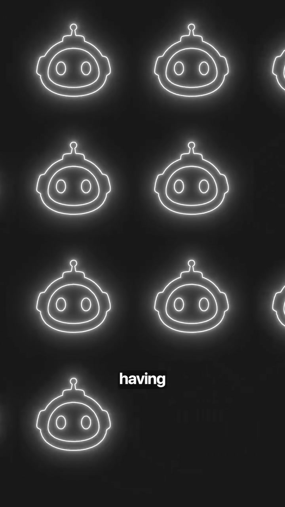
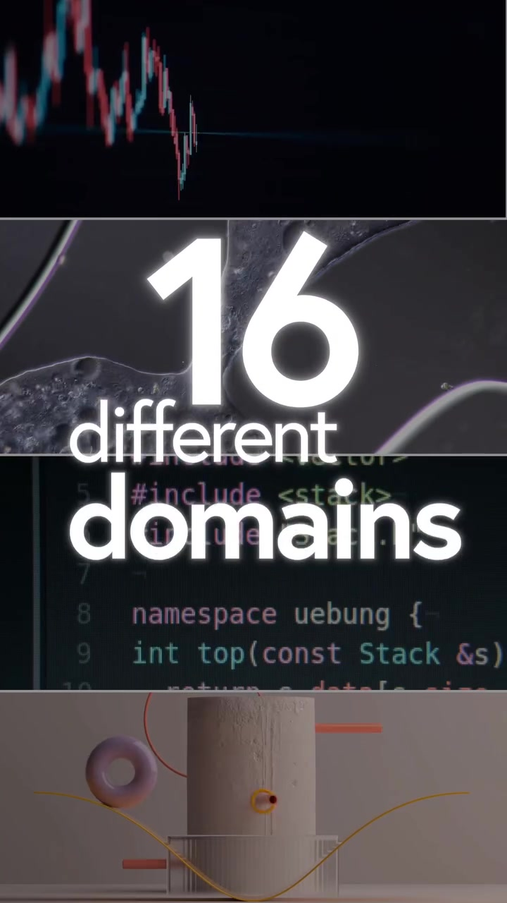

AI · System-Architecture
5 Open-Source Repositories for Building Autonomous Multi-Agent AI Systems
Building production-grade AI agents from scratch requires solving state synchronization, browser DOM execution, tool sandboxing, and inter-agent communication. Rather than reinventing agent primitives, top AI engineering teams leverage battle-tested open-source repositories to orchestrate specialized subagent swarms and autonomous browser agents.
Visual Reference Stills


The 5 Essential Repositories
Contains 2,302 specialized subagents categorized across 16 commercial domains (Engineering, Finance, Security, DevOps, Growth). Provides complete system prompts, tool schemas, and output validation boundaries for instant multi-agent dispatch.
Enables LLMs to see and interact with websites like a human. Features DOM tree accessibility tree pruning, interactive clicking, form typing, captcha handling, and vision-assisted coordinate clicking via Playwright.
Focuses on ergonomic, stateless agent coordination. Introduces clean Routine and Handoff primitives where agents dynamically yield control to specialists via standard function return values without monolithic orchestrator bloat.
Open-source implementation of autonomous full-horizon task execution. Dispatches planning graphs, writes and executes code locally, navigates the web, and loops until the terminal objective is verified.
End-to-end telemetry and evaluation harness that logs nested agent-to-agent traces, monitors token costs, tracks execution latency, and benchmarks hallucination rates on live production agent workflows.